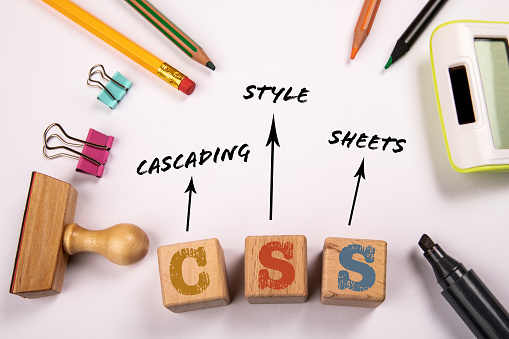

CSS
Cascading Style Sheets (CSS) is a style sheet language used for describing the presentation of a document written in a markup language such as HTML or XML (including XML dialects such as SVG, MathML or XHTML).[1] CSS is a cornerstone technology of the World Wide Web, alongside HTML and JavaScript.
is designed to enable the separation of content and presentation, including layout, colors, and fonts.[3] This separation can improve content accessibility; provide more flexibility and control in the specification of presentation characteristics; enable multiple web pages to share formatting by specifying the relevant CSS in a separate .css file, which reduces complexity and repetition in the structural content; and enable the .css file to be cached to improve the page load speed between the pages that share the file and its formatting. Separation of formatting and content also makes it feasible to present the same markup page in different styles for different rendering methods, such as on-screen, in print, by voice (via speech-based browser or screen reader), and on Braille-based tactile devices. CSS also has rules for alternate formatting if the content is accessed on a mobile device.[4]
